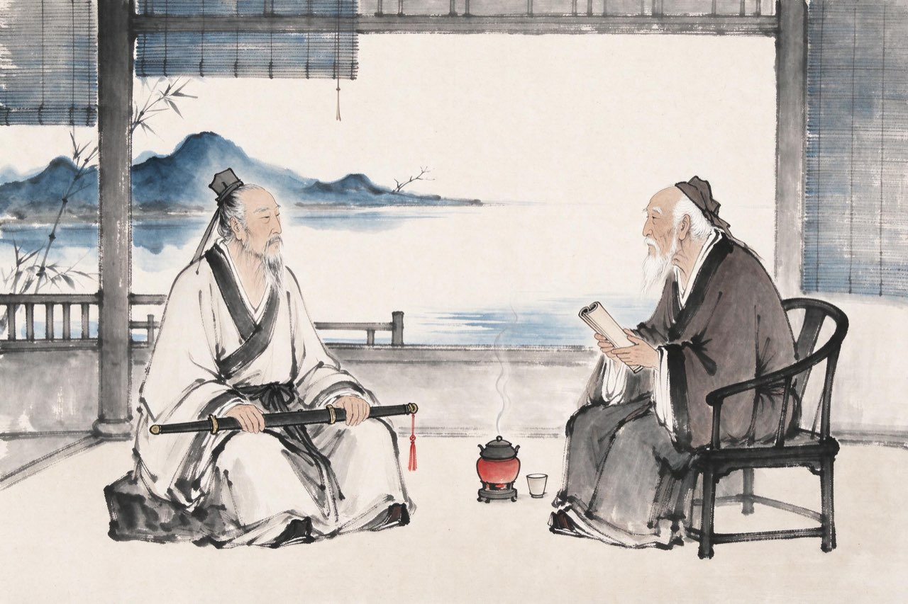
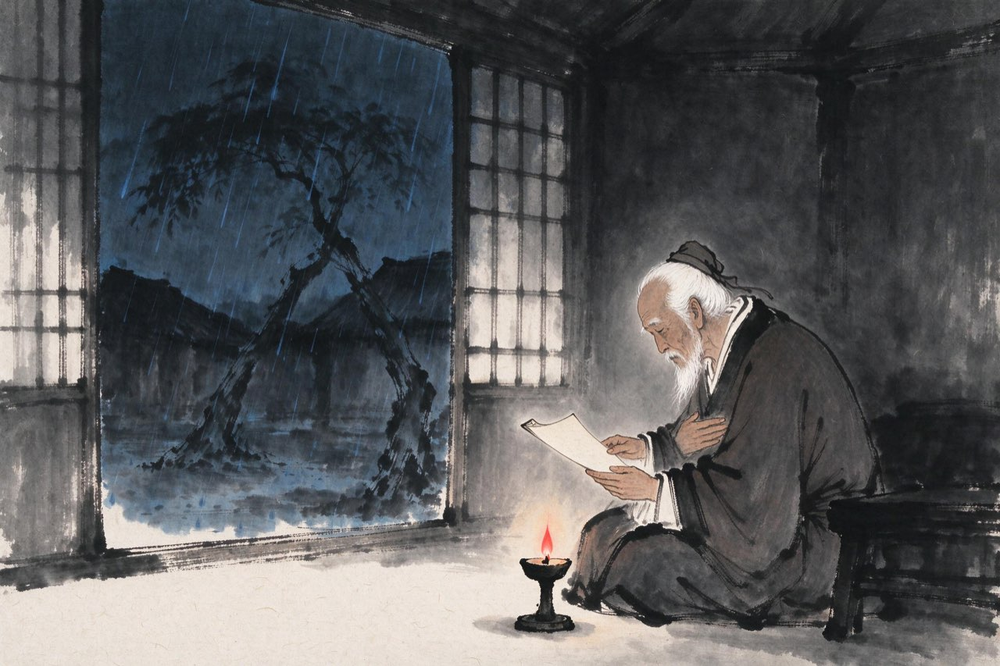

陆游 · 1202-1210
暮年
家祭

辛弃疾过访
嘉泰二年，朝廷修孝宗、光宗实录，七十八岁的放翁被召入都，任同修国史。书成，即请归——朝廷留不住这个年纪的人。
归山阴后不久，绍兴府来了一位新的知府兼浙东安抚使：辛弃疾。六十四岁，罢官闲居多年后再度起用。
两个等了一辈子的人，在镜湖边相见了。一个从山东回来，剑还没锈；一个从蜀道回来，诗已经写满了一屋子。辛弃疾见你屋宇简陋，几次要出钱为你筑舍，你都辞了——你的穷，不肯折他的傲。
次年，辛弃疾被召入都。你写诗送他：「稼轩落笔凌鲍谢」——你盼他此去能推动北伐。两位老人的这次相会，后来成了两卷诗史之间唯一的握手。
注
- 辛弃疾嘉泰三年差知绍兴府兼浙东安抚使，时年六十四；陆游七十九
- 《送辛幼安殿撰造朝》「稼轩落笔凌鲍谢，退避声名称学」——推挹之至，亦是共勉恢复
- 两人此前无交往记载，此为唯一可考的会面
开禧元年冬，八十一岁。夜里你又去了沈园——在梦里。路近城南，你已怕走；可梦不管这些，它年年还带你去。园中还是断壁，壁上还是那阕词，水边还是那个照影的位置。梦醒时天还没亮——
十二月二日夜梦游沈氏园亭
路近城南已怕行，沈家园里更伤情。
香穿客袖梅花在，绿蘸寺桥春水生。
城南小陌又逢春，只见梅花不见人。
玉骨久成泉下土，墨痕犹锁壁间尘。
注
- 同题二首并录；「已怕行」一作「己怕行」——异文并录，主文从通行整理本
- 城南怕行、梦犹带路——从三十一岁到八十一岁，整整五十年

等来的北伐
你等的北伐，终于来了——开禧二年，韩侂胄兴兵。
八十二岁的放翁，等了一辈子。可是这一次，你看得分明：军备未齐，将帅乏人，朝廷用兵更像权臣的自救。你还是写了送行的诗——等了四十年的兵事，哪怕仓促，你骂不出来。
结局来得很快。宋军各线溃败，次年，朝廷函韩侂胄首级以向金人请和——嘉定和议，岁币增加，疆界如旧。
捷报没有来，来的是和书。八十四岁的人，在山阴的灯下读完败讯，窗外风雨。此生谁料，心在天山，身老沧洲——那阕《诉衷情》里的话，一句句都应验了。
注
- 《宋史·陆游传》原文：「晚年再出，为韩侂胄撰《南园》《阅古泉记》，见讥清议」——庆元年间放翁曾为韩作园记，后世或讥其依附；今观记文无谀词，主战者与韩之用兵立场相合，属之与不属之，各有说
- 「心在天山，身老沧洲」出《诉衷情·当年万里觅封侯》，作年无确考，词境正此期
- 本页深色底：等了一辈子的北伐，来时已是仓促一掷
嘉定二年十二月，山阴，八十五岁的放翁走到了最后一冬。弥留之际，儿孙聚在榻前。他知道自己在等什么，也知道等不到了。于是他把这场等了一生的等待，交给了身后的人——这是他的绝笔——
示儿
死去元知万事空，但悲不见九州同。
王师北定中原日，家祭无忘告乃翁。
注
- 此诗为绝笔，作于临终；一个等了八十五年的人，把等待托付给了身后
- 临终绝笔而诗中有光：捷报没有来，他把等待交给了家祭之日的儿孙——遗嘱本身，就是火种
- 六十余年后宋亡，遗民读此诗泣下——他等的捷报，终究没有来；这句诗，替他等到了所有后来的人